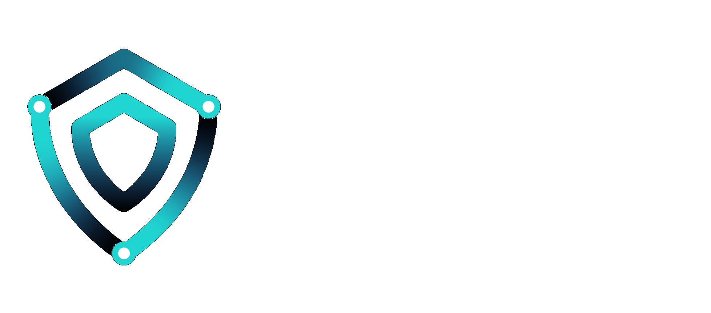

<div id="homepage">
	<div id="content-wrap"> <!-- div content-wrap -->
		<div id="top" style="position: relative; text-align: center; padding: 6% 0;">
			<div id="logo" style="vertical-align: top;">
				
			</div>
			<div id="description" style="margin: 2% 20%;">
				<p class="font_subtitle_white_p">Beyond Login. Protect and view sensitive content anywhere.</p>
				<p class="font_medium_p" style="color: #d8d8d8; text-align: center;">Cyphlens is a new and powerful technology, with a unique point-to-decrypt user experience, that adds an extra layer of security on existing systems. With Cyphlens, accessing, viewing and sharing sensitive content is secure and resilient to advanced targeted attacks and malware.</p>
			</div>
			<div style="vertical-align: top; margin-bottom: 4%;"></div>
			<div class="card grow" id="home_pencrypt">
				<p class="font_large_p">Data Security</p>
				<p class="font_normal_p" style="text-align: left;">Protect users' sensitive information even if their account is compromised.</p>
				<p class="font_normal_p" style="text-align: left;"><i class="fas fa-lock fa-fw" style="color: #599EBB;"></i>&nbsp;&nbsp;Partial encryption of sensitive data</p>
				<p class="font_normal_p" style="text-align: left;"><i class="fas fa-sliders-h fa-fw" style="color: #599EBB;"></i>&nbsp;&nbsp;Fine-grained access control</p>
				<p class="font_normal_p" style="text-align: left;"><i class="fas fa-user-secret fa-fw" style="color: #599EBB;"></i>&nbsp;&nbsp;Compromised account protection</p>
			</div>
			<div class="card grow" id="home_m2fa">
				<p class="font_large_p">Mutual 2FA</p>
				<p class="font_normal_p" style="text-align: left;">Add peace of mind to every transaction, keep control.</p>
				<p class="font_normal_p" style="text-align: left;"><i class="fas fa-peace fa-fw" style="color: #779A61;"></i>&nbsp;&nbsp;No man-in-the-middle and phishing attacks</p>
				<p class="font_normal_p" style="text-align: left;"><i class="fas fa-signal fa-sm fa-fw" style="color: #779A61;"></i>&nbsp;&nbsp;Works both online and offline</p>
				<p class="font_normal_p" style="text-align: left;"><i class="fas fa-dollar-sign fa-fw" style="color: #779A61;"></i>&nbsp;&nbsp;Reduce customer service costs</p>
			</div>
			<div class="card grow" id="home_personal">
				<p style="position: absolute; top: 10px; right: 20px; background-color: #5A5A5A; color: #FFFFFF; font-weight: 500; font-size: 10px; padding: 2px;">FREE</p>
				<p class="font_large_p">Personal Privacy</p>
				<p class="font_normal_p" style="text-align: left;">Share private information securely with anyone, on any app or platform.</p>
				<p class="font_normal_p" style="text-align: left;"><i class="fas fa-shield-alt fa-fw" style="color: #AE595B;"></i>&nbsp;&nbsp;Protect your private content in plain sight</p>
				<p class="font_normal_p" style="text-align: left;"><i class="fas fa-sliders-h fa-fw" style="color: #AE595B;"></i>&nbsp;&nbsp;Control who can see what and when</p>
				<p class="font_normal_p" style="text-align: left;"><i class="fas fa-share-alt fa-fw" style="color: #AE595B;"></i>&nbsp;&nbsp;Share securely on any app or platform</p>
			</div>
		</div>
		<div class="section_white" style="position: relative; text-align: center; vertical-align: top; padding-bottom: 40px;">
			<p class="font_large_p" style="padding-bottom: 20px;">Getting Started</p>

			<div style="text-align: center; margin-left: -10%; margin-right: 2.5%; display: inline-block; vertical-align: top; width: 45%;">
				<div style="position: relative; display: inline-block; margin-bottom: 4%; padding: 20px 40px; border: 1px solid #8EA0B3; border-radius: 0px;">
					<p class="font_large_p" style="color: #8EA0B3;"><i class="far fa-building fa-sm"></i>&nbsp;&nbsp;Businesses</p>
					<p class="font_normal_p" style=" padding-bottom: 30px;">Request a free trial and get access via our Admin Dashboard.</p>
					<div style="display: inline-block; padding-right: 40px;">
						<i class="far fa-address-card fa-5x" style="color: #8EA0B3;"></i>
						<p class="font_normal_p">1. Sign Up</p>
					</div>
					<div style="display: inline-block;">
						<i class="fas fa-server fa-5x" style="color: #8EA0B3;"></i>
						<p class="font_normal_p">2. Get API Access</p>
					</div>
				</div>
				<div style="margin-top: 10px;">
					<p class="font_medium_p" style="display: inline-block; line-height: 40px; margin: 0;">Request a free trial with no obligations.</p>
					<button id="btntrial" class="button anim_btn" style="vertical-align: top; margin-left: 20px; width: 160px; height: 40px;"><span>Free&nbsp;Trial</span></button>
				</div>
			</div>
			<div style="text-align: center; margin-right: -10%; margin-left: 2.5%; display: inline-block; vertical-align: top; width: 45%;">
				<div style="position: relative; display: inline-block; margin-bottom: 4%; padding: 20px 56px; border: 1px solid #8EA0B3; border-radius: 0px;">
					<p style="position: absolute; top: 10px; right: 20px; background-color: #5A5A5A; color: #FFFFFF; font-weight: 500; font-size: 10px; padding: 2px;">FREE</p>
					<p class="font_large_p" style="color: #8EA0B3;"><i class="far fa-user-friends fa-sm"></i>&nbsp;&nbsp;Consumers</p>
					<p class="font_normal_p" style=" padding-bottom: 30px;">Get the app, explore your personal <a class="default" href="https://dashboard.cyphme.com/">Dashboard</a>, have fun.</p>
					<div style="display: inline-block; padding-right: 40px;">
						<i class="fas fa-mobile-alt fa-5x" style="color: #8EA0B3;"></i>
						<p class="font_normal_p">1. Get The App</p>
					</div>
					<div style="display: inline-block;">
						<i class="fas fa-sliders-h fa-5x" style="color: #8EA0B3;"></i>
						<p class="font_normal_p">2. Dashboard</p>
					</div>
				</div>
				<div style="margin-top: 10px;">
					<p class="font_medium_p" style="display: inline-block; line-height: 40px; margin: 0;">Start right away for personal use.</p>
					<button class="button outline_btn anim_btn" style="vertical-align: top; margin-left: 20px; width: 160px; height: 40px;" onclick="$('#personal').trigger('click');"><i class="fas fa-shield-alt fa-fw"></i>&nbsp;&nbsp;<span>Learn&nbsp;More</span></button>
				</div>
			</div>
		</div>
		<div class="section_light" style="position: relative; text-align: center; vertical-align: top; padding: 40px;">
			<div style="padding: 20px;">
				<p class="font_large_p" style="padding-bottom: 20px;">How Can Cyphlens Protect Your Business?</p>
				<p class="font_medium_p">Businesses can use our REST API to protect their customers and employees.</p>
			</div>
			<div style="display: inline-block; width: 41%; vertical-align: top; border-right: 1px solid #b6b6b6; padding-right: 10px;">
				<p class="font_large_p"><i class="fas fa-house-user fa-fw"></i>&nbsp;&nbsp;Customers</p>
				<ul class="fa-ul">
					<li><span class="fa-li" style="color: #4C6EF5;"><i class="fas fa-circle-notch fa-xs"></i></span>
						<p class="font_normal_p" style="text-align: left;">Protect Personal Identifiable Information (PII) and sensitive data in medical software, websites, bank statements and more;</p>
					</li>
					<li><span class="fa-li" style="color: #4C6EF5;"><i class="fas fa-circle-notch fa-xs"></i></span>
						<p class="font_normal_p" style="text-align: left;">Beyond login: even if a user account is compromised, critical information remains inaccessible to the attacker and available to the user;</p>
					</li>
					<li><span class="fa-li" style="color: #4C6EF5;"><i class="fas fa-circle-notch fa-xs"></i></span>
						<p class="font_normal_p" style="text-align: left;">Protection of sensitive online transactions from phishing and man-in-the-middle attacks;</p>
					</li>
					<li><span class="fa-li" style="color: #4C6EF5;"><i class="fas fa-circle-notch fa-xs"></i></span>
						<p class="font_normal_p" style="text-align: left;">Credit card CVV protection and PIN distribution.</p>
					</li>
				</ul>
			</div>
			<div style="display: inline-block; width: 40%; vertical-align: top;">
				<p class="font_large_p"><i class="far fa-id-badge fa-fw"></i>&nbsp;&nbsp;Employees</p>
				<ul class="fa-ul">
					<li><span class="fa-li" style="color: #4C6EF5;"><i class="fas fa-circle-notch fa-xs"></i></span>
						<p class="font_normal_p" style="text-align: left;">DevOps and HR operations: protect employees' financial information, admin accounts, infrastructure access, and more;</p>
					</li>
					<li><span class="fa-li" style="color: #4C6EF5;"><i class="fas fa-circle-notch fa-xs"></i></span>
						<p class="font_normal_p" style="text-align: left;">Secure C-level communication: protect sensitive information in emails and messaging apps (e.g., Slack) even if the email or app account is compromised;</p>
					</li>
					<li><span class="fa-li" style="color: #4C6EF5;"><i class="fas fa-circle-notch fa-xs"></i></span>
						<p class="font_normal_p" style="text-align: left;">Business Email Compromise (BEC) prevention: verify the identity of the sender effortlessly;</p>
					</li>
					<li><span class="fa-li" style="color: #4C6EF5;"><i class="fas fa-circle-notch fa-xs"></i></span>
						<p class="font_normal_p" style="text-align: left;">Support for GDPR and other privacy policies and regulations.</p>
					</li>
				</ul>
			</div>
			<p class="font_normal_p" style="margin-top: 60px;">Not a business? Use our FREE app for <a class="default btn_personal" href="/personal_security" rel="address:/personal_security">personal use</a> at home, at work, or anywhere you like.</p>
		</div>
		<div id="accordion" class="section_white" style="position: relative; text-align: center; vertical-align: top; padding: 40px;">
			<p class="font_large_p" style="padding-bottom: 20px;">FAQs</p>
			<p class="font_normal_p">If you cannot find the answer to your question here, feel free to <a class="default btn_contacts" href="/contacts" rel="address:/contacts">contact us</a>.</p>
			<button class="accordion">Why is the IBM logo on your website?</button>
			<div class="panel">
				<p class="font_normal_p" style="text-align: left;">Cyphlens earned a place in the IBM Hyper Protect Accelerator Class of 2021, following a thorough 10-week application process. Created in 2019, the Hyper Protect Accelerator seeks to <i><q>build and scale the next generation of fintech and healthtech companies with solutions engineered to keep their sensitive data highly secured</q></i>. Cyphlens underwent multiple stages of application, including a rigorous technical review and business analysis, to win IBM’s support.</p>
			</div>

			<button class="accordion">What information is required to start a free trial?</button>
			<div class="panel">
				<p class="font_normal_p" style="text-align: left;">It's very easy. Your admin (the person who will setup and test the Cyphlens API) needs to do the following:</p>
				<ol>
					<li>
						<p class="font_normal_p" style="text-align: left;">Download the Cyphlens app and sign up.</p>
					</li>
					<li>
						<p class="font_normal_p" style="text-align: left;">Click on the 'Free Trial' button on our website and send us: <i>(i)</i> the email address used at signup in the previous step; <i>(ii)</i> the company name; <i>(iii)</i> the company domain URL.</p>
					</li>
					<li>
						<p class="font_normal_p" style="text-align: left;">Shortly after receiving all the information, we will send you an email with the instructions on how to access your company Cyphlens dashboard. The dashboard will have API keys and everything else you need to start integrating and using our REST API.</p>
					</li>
				</ol>
			</div>

			<button class="accordion">What are the costs for using your services?</button>
			<div class="panel">
				<p class="font_normal_p" style="text-align: left;">For <a class="default btn_personal" href="/personal_security" rel="address:/personal_security">personal use</a> you can just download the Cyphlens app and have fun, it's completely FREE. If you are a business, it depends on your needs and the specific solution you are interested in. Please <a class="default btn_contacts" href="/contacts" rel="address:/contacts">contact us</a> for further details.</p>
			</div>

			<button class="accordion">Do you offer a non cloud-based solution?</button>
			<div class="panel">
				<p class="font_normal_p" style="text-align: left;">We understand that, due to policy and compliance, some companies cannot use cloud-based solutions. As part of our offering we also have an on-premises solution. Please <a class="default btn_contacts" href="/contacts" rel="address:/contacts">contact us</a> for additional information.</p>
			</div>

			<button class="accordion">Do you offer white labeling?</button>
			<div class="panel">
				<p class="font_normal_p" style="text-align: left;">Yes, we offer white labeling through our SDK and API. Please <a class="default btn_contacts" href="/contacts" rel="address:/contacts">contact us</a> for further information.</p>
			</div>

			<button class="accordion">I am interested in the technology. Can I see a demo?</button>
			<div class="panel">
				<p class="font_normal_p" style="text-align: left;">Definitely. Please <a class="default btn_contacts" href="/contacts" rel="address:/contacts">contact us</a> in order to schedule a demo and to answer any question you may have.</p>
			</div>

			<button class="accordion">What is an Emergency Contact?</button>
			<div class="panel">
				<p class="font_normal_p" style="text-align: left;">An emergency contact is your only way to recover your account if you no longer have access to your phone. If you do not add an emergency contact to your account, there will be no way for you to recover your account and you will lose access to all of your content.</p>
			</div>

			<button class="accordion">How do I add an Emergency Contact to my Cyphlens account?</button>
			<div class="panel">
				<p class="font_normal_p" style="text-align: left;">Go to <b style="font-size: 15px;">Settings > Emergency Contact</b> in your Cyphlens app and follow the step-by-step instructions. Whomever you select as your Emergency Contact will have the chance to either accept or reject the request.</p>
			</div>

			<button class="accordion">What is the Cyphlens Dashboard and how can I access it?</button>
			<div class="panel">
				<p class="font_normal_p" style="text-align: left;">When you signup in your Cyphlens app, you automatically get access to the Cyphlens Personal Dashboard. From the dashboard, you can do things like initiate account recovery, turn on/off your Cyphlens account, create encryptions and more. In order to log in to your dashboard just click on the LOGIN button on our website and use the same credentials you use to log in to your Cyphlens app.</p>
			</div>

			<button class="accordion">What is the Cyphlens Business Dashboard?</button>
			<div class="panel">
				<p class="font_normal_p" style="text-align: left;">Every business using Cyphlens products and services will get free access to the Cyphlens Business Dashboard. From this dashboard, admins can do things such as personalizing company logo and URL for user-experience customization (e.g., Mutual 2FA), get access to your API keys and more. Over time, and based on customer feedback, new functionalities will be added to the dashboard.</p>
			</div>

			<button class="accordion">What should I do if my phone is lost or stolen?</button>
			<div class="panel">
				<p class="font_normal_p" style="text-align: left;">If your phone is lost or stolen you should immediately log in to your personal dashboard and turn your account OFF. Once you have a new device, use the dashboard to turn your account back ON and initiate the transfer to the new device using your emergency contact. On completeing the transfer, all account information and data will be removed from the old device.</p>
			</div>

			<button class="accordion">Can I log in to my Cyphlens app from another device?</button>
			<div class="panel">
				<p class="font_normal_p" style="text-align: left;">No, for security reasons you can access your Cyphlens account only from one device.</p>
			</div>

			<button class="accordion">How do I transfer my Cyphlens account to another device?</button>
			<div class="panel">
				<p class="font_normal_p" style="text-align: left;">In order to transfer your existing Cyphlens account to another device, go to <b style="font-size: 15px;">Settings > Device</b> in your Cyphlens app and follow the step-by-step instructions. Once the transfer is complete, all account information and data will be removed from the old device.</p>
			</div>
		</div>
	</div>
</div>

